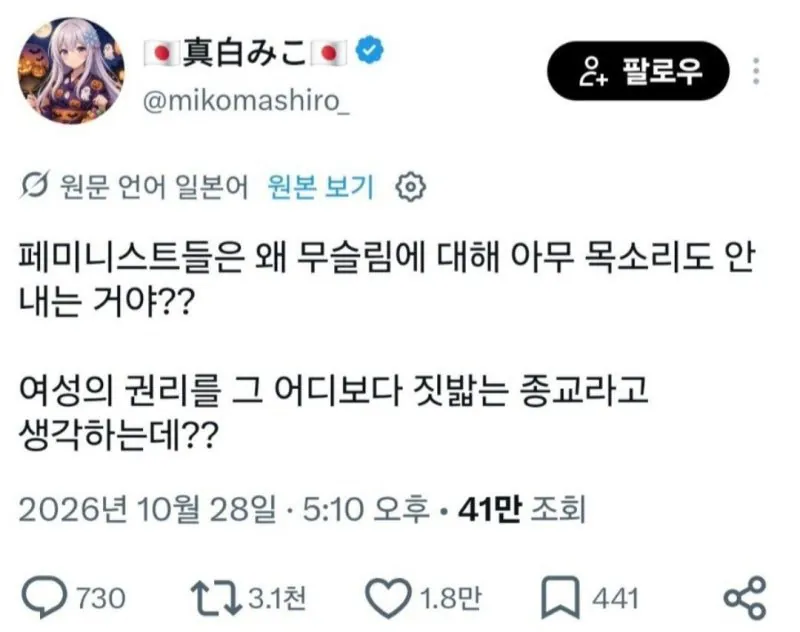

자기네 편은 성추행해도 쉬쉬하니 뭐

자기네 편은 성추행해도 쉬쉬하니 뭐
순서를 지키게나
거기 건드리다가 집회같은거 나갔을때 뒤질 확률이 있거든요 ㅎ.
참수당함
생각해보면 국내 무슬림 영역확장에 가장 반대해야하는 집단 아니냐?
누울 자리를 보는거지ㅋㅋ 거긴 누우면 이득도 없고 진짜 밟혀 뒤지거든
조금만 생각해봐도 멍청한 소리인 게 남성인권운동 하면 미국 남성, 일본 남성, 중국 남성 인권까지 챙겨줌? 그리고 기본적으로 여자들이 남자들보다 훨씬 더 무슬림에 대해서 강경하고 적대감 심함.
여성들은 맞는데
여성 단체는 안그래
여성 단체는 여성들을 대표하지 않아
교집합이 좀 있을 뿐이지
아니 그래서 이슬람 문화권 여성 단체도 아니고, 한국이나 일본은 이슬람이 주류 종교도 아닌데, 뭔 무슬림에 대해 목소리를 내라는거임???
사우디랑 단교하라는 뜻 아닐까? 와하비즘 수출국이니까. 미국이 보호하고 보장해주는 체제지만 ㅋㅋ
일본은 모르겠는데 이슬람 이민자들이 많은 나라에서 페미니스트들이 이슬람 비판에 소극적이다. 4chan에서 그 이중성 꼬집는다고 만든 밈이 "Islam is right about women"임. 정상적인 페미라면 당연히 개소리라고 여성혐오라고 목소리를 내야 하는데 이슬람혐오자가 될까봐 이러지도 저러지도 못하고 전전긍긍하게 만드는 게 포인트.
주요 정치-경제 세력이나 국제인권 단체도 이슬람 인권 문제에 대해서 소극적이거나 신중한건 마찬가지임. 그만큼 복잡하고 어려운 문제인데, 걍 덮어두고 왜 비판 안함? 이러는건 뭐 맡겨두기라도 했음?
아 네
뷔페라서 그건 안건들꺼라네여~
퇴행적 좌파를 아시나요
ㅋㅋㅋ 모순이 한두군데가 아니라서 하나하나 반박하다간 늙어죽는다구욨!
한남 패면 나라가 편들어주잖아요
페미니스트들은 자신들이 어떤 상황에서든 사회적 약자임이 중요함. 그걸 동력으로 저항하는 애들이라...
근데 잘못하면 차별받는 외국인+소수종교로 자신들이 상대적으로 강자입장이 되는 그림이 나올 수 있어서
굳이 모른체 하는거임ㅋㅋ
페미편은 아닌데 경찰이 치안유지하자고 다른나라 사정까지 간섭하고 그러지는 않지
이런 억까는 대체로 도움이 안됨
한국 페미니스트: 알게 뭐야? 우리랑 무슨 상관이야? 외국이잖아
한국 페미니스트: 우린 북한 여성 인권도 모르쇠 중인걸 뭐
한국 페미니스트: 우린 여성인권을 위하는게 아니라 우리의 기분과 우리의 이득만 노린다
합리적으로 행동하는건 페미니스트가 아닙니다
이유는 간단함.
본인의 이득과 관계없는 대상이기 때문이지.
무슬림들의 여성의 권리를 짓밟는 현실은 별로 페미들 이득에 도움이 안됨. 그들을 구원해주자는 메세지 내는것조차도 오히려 더 도움이안됨.
그래서 그냥 무시.
걔들은 진짜 모가지 따버리거든
그거 뿐만 아니라, 시의원 구의원 사무직 ceo 여성임원 이런건 할당제 하라고 외치면서, 정작 남초인 힘든 업무에는 할당제 외치지도 않잖아 ㅋㅋ
오히려 페미중에 이슬람 빠는 애들 종종 보여서 왜그러나 싶었는데
그냥 반골 반사회적이라 페미하고 이슬람 빨고 그러는 것 같더라
지금 세계적 추세가 무슬림과 공산주의의 대무공합작이 이뤄지고 있다고 들음
절대 공존할수없는 두 세력인데 자유진영의 구멍이 커진 지금 둘이 전략적으로 서방공략하기 좋음
남의 권리는 알빠 아니고 자기 권리만 중요하기 때문
놀랍게도 이슬람 페미니즘이라는 모순과도 같은 것이 존재하기는 한다
페미는 이권단체인데 무슬림한테는 받아낼게 없으니 관심이 없는게 당연하다고 보는데
돈이 안되니까
돈이 안된다고.
신념이 아니라 편하게 돈 벌려고 하는 퍼포먼스인데
괜히 저항 들어올것 같은 분야니까 그러지.
북한 기쁨조는 대놓고 성착취인데 그냥 웃음거리로 전락해서 인권단체든 여성단체든 신경도 안씀 ㅋㅋㅋㅋ
분명 페미니스트들은 약자와의 연대를 중요시한다고 들었는데
아시아 페미단체들, 개인들은 끔찍할 정도로 자기중심적이고 나르시트들이다
팩트는 한국 페미는 레디컬이라 이슬람에 비판적인 의견이 더 많다. 왜냐면 여성인권>>>>성소수자+외노자+무슬림 등등 인권이기 때문.
일부 남성들이 옹호하는 "진짜" 페미들. 즉 남성약자들도 지지하면서 여성인권도 함께 지지하는 교차성페미들이 무슬림에 우호적인 경우가 더 많음.
같은 종교끼리 서로 안싸우는거임
그냥 자기 나라와 남자가 싫은거지
진짜 여성인권 생각하는게 아님
페미니스트 단체-진보
이슬람단체 -진보
이걸 전두지휘 하는곳 진보관련 당 ㅁㅈㄷ
그 당을 전두지휘 하는 ㄱ산당 ㅋㅋㅋㅋㅋ
위에서 주는 중국돈에 달달
그런 모순을 견뎌야 남성혐오를 한다구욧!!! 공부하세욧!!!!!